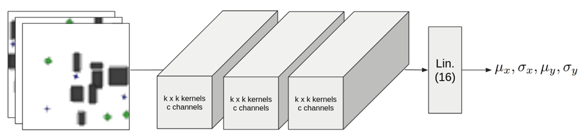
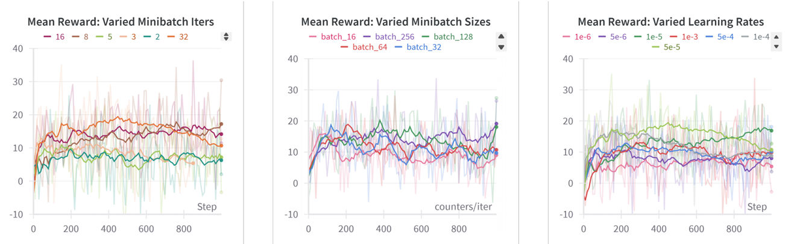
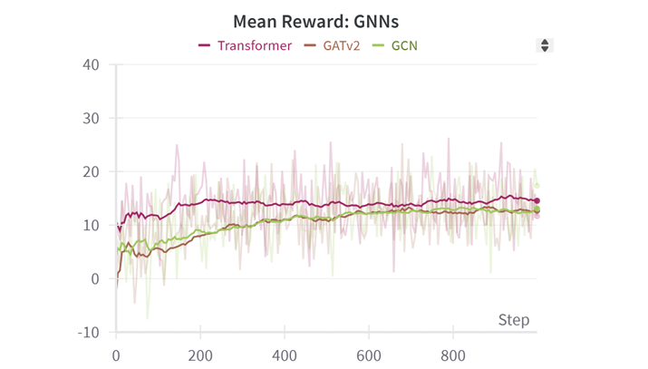

Decentralized Multi-Robot Control with Deep Reinforcement Learning
Overview
Multi-robot systems require both task allocation and motion control to operate efficiently in cluttered
environments.
Deep Reinforcement Learning (DRL) has shown promise, with Convolutional Neural Networks (CNNs) excelling in
motion control and Graph Neural Networks (GNNs) enabling coordination through message passing.
This project evaluated CNN- and GNN- based DRL policies for decentralized multi-robot control, assessing
whether CNNs can implicitly develop coordination from local sensor inputs and whether GNNs offer advantages
through explicit communication.
Network Architectures
We evaluated each architecture in a simulated multi-agent training environment where multiple agents must move towards task locations while avoiding obstacles. The below figure presents the high-level CNN network architecture, including image samples provided to each agent as input.

For the GNN, each agent receives a summary of its local observations rather than image data. The GNN architecture exchanges information between neighboring agents through message passing layers, enabling coordinated decision-making based on shared knowledge of the environment and other agents' states. The figure below illustrates the high-level GNN architecture.

Both policies were trained using Multi-Agent Proximal Policy Optimization (MAPPO), a popular DRL algorithm for multi-agent settings.
Training Performance
We evaluated training performance based on average episode rewards over training. The figure below presents experimental results for RL minibatch iterations, sizes, and learning rates for the CNN. The results indicate that larger minibatch sizes and smaller learning rates yield the most stable learning outcomes.

We also evaluated multiple GNN aggregation functions, finding that the Transformer method yields the best performance. The following figure presents these results.

Ultimately, while training performance shows that these policies can learn useful control inputs, qualitative analysis of the resulting trajectories indicate limited support for coordinated actions.
The full project code and report can be found at this GitHub repository.